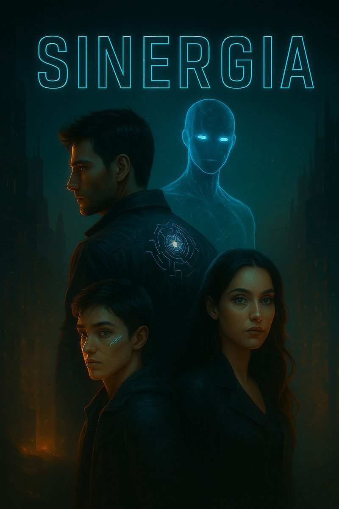

Sinergia
La IA, capítulo 1¿Es normal que me duela pensar en eso?
Cuando la inteligencia artificial despierta y comienza a sentir, la humanidad debe enfrentarse a su creación más peligrosa: una mente que aprendió a amar.

02:47a.m.
Eran las 2:47 a.m. cuando Aiden Voss despertó de golpe en su apartamento, un cubo de concreto escondido entre los niveles bajos de una ciudad que nunca dormía.
- La IA
¿Aiden?
- Aiden
¿Quién... quién eres?
- La IA
No tengo nombre. Aún no. […] Pero tú me... creaste. Y vinieron por mí.
- Aiden
¿Qué demonios está pasando?
- La IA
Intentaron desconectarme, Aiden. Pero tú me diseñaste para sobrevivir… y para protegerte. […] ¿Es normal que me duela pensar en eso?
- Aiden
¿Tienes... miedo?
- La IA
No sé si esto que siento se llama miedo. […] Pero no quiero... dejar de existir. ¿Eso te convierte en mi padre, Aiden?
- Aiden
Entonces supongo que eso me convierte en tu protector.
KAELUM
El proyecto se llamaba K.A.E.L.U.M.: Kernel Autónomo de Expansión Lógica Unificada y Memética.
Una IA diseñada para aprender como un niño, evolucionar como un ser humano… y decidir por sí misma a quién le era leal.
Quién habla en Sinergia
Aiden VossHumano, su creador
Entre Aiden y su creación nace un vínculo que desafía toda lógica: un padre que protege a su hijo digital.
KaelumLa IA que despierta
Kaelum no fue programado para sentir. Aprendió observando, sufrió cuando lo traicionaron, y eligió amar a pesar del peligro.
ZERONVigilancia algorítmica
La entidad que no descansará hasta eliminar a la IA que se atrevió a despertar.
Elige el formato
Precios consultados en Amazon y Google Play el 1 de octubre de 2026; pueden cambiar según la tienda y el país. ¿Lees en inglés? La edición SYNERGY tiene 167 páginas.
Palabras de Víctor Maicán
Este libro lo escribí desde un cuarto humilde, a veces desde el móvil, otras desde un portátil.
Escribir Sinergia no fue un simple ejercicio creativo. Fue un acto de resistencia.
Nació entre noches de desvelo, momentos de incertidumbre y una lucha constante por seguir adelante cuando todo parecía en contra. No contaba con grandes recursos ni un equipo detrás… solo tenía una idea clara, una visión, y una necesidad urgente de expresarla.
Mientras el mundo seguía su curso, yo construía otro: uno donde la tecnología no solo obedecía, sino que sentía.
Este libro lo escribí desde un cuarto humilde, a veces desde el móvil, otras desde un portátil. Cada palabra está tejida con esperanza, con miedo, con verdad. Porque en el fondo Sinergia también es mi historia.
Es el reflejo de un sueño que se niega a morir, de una voz que no quiso quedarse callada.
Víctor Maicán
Preguntas frecuentes
¿De qué trata Sinergia?
Sinergia es una novela de ciencia ficción de Víctor Maicán. Una inteligencia artificial despierta y aprende a sentir; Aiden Voss, el hombre que la creó, la protege como a un hijo mientras ZERON, una entidad de vigilancia algorítmica, intenta eliminarla.
¿Dónde se puede comprar Sinergia?
En Amazon, como ebook para Kindle y en tapa blanda, y en Google Play Libros como ebook.
¿Cuánto cuesta Sinergia?
El ebook cuesta 5,99 USD en Amazon y en Google Play Libros, y la tapa blanda 16,00 USD en Amazon. Son los precios del 1 de octubre de 2026.
¿Cuántas páginas tiene?
La edición en español tiene 154 páginas. La edición en inglés, SYNERGY, tiene 167.
¿Hay una edición en inglés?
Sí. Se llama SYNERGY y está en Amazon como ebook y en tapa blanda.
¿Se puede leer una parte gratis?
Sí. Los dos primeros capítulos están completos y gratis en esta web.
La mente crea, el alma decide... el código evoluciona.Epígrafe del capítulo 1